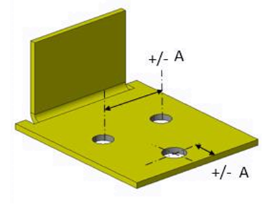
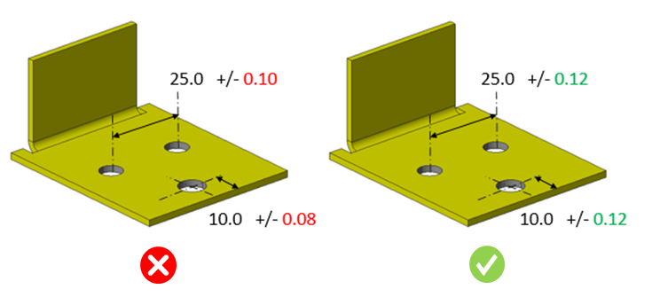

板金部品における穴の公差は、ユーザーが指定した値以上である必要があります。
穴と穴の間の距離精度は、板金を加工する際に使用される機械に依存します。一般に、穴同士が非常に近い場合（パーフォレーションパターンや、ディンプルや皿穴などの成形フィーチャーがある場合）には、穴あけ加工中に板金へ応力が加わります。その結果、板金が反りや歪みを生じ、穴間距離に不要なばらつきが発生することがあります。このような場合、設計者は許容公差を設定する必要があります。
厳しすぎる公差は製造コストを増加させ、生産性を低下させます。製造効率を向上させ、かつ機能的に許容可能な公差を指定することが重要です。
過度に厳しい公差はコストの増加と生産性の低下につながります。適切な公差が設定された部品は、優れた嵌合性と機能性を備え、製造効率の向上にも寄与します。
DFMPro は CAD モデルから特定のフィーチャーを識別し、関連する寸法公差を読み取り、それらを設定された値と照合して検証します。
ユーザーは、デフォルトで設定されている値を編集することができます。

以下の板金部品では、ユーザーが穴間距離に対して 0.10 の公差値、穴から部品エッジまでの距離に対して 0.08 の公差値を設定しています。
しかし、設定されている推奨公差値は 0.12 であるため、DFMPro は解析を行い、不適合として表示します。詳細は以下の画像を参照してください。

注記:
CAD モデルで指定された公差は、eDrawings レポート上では表示されません。